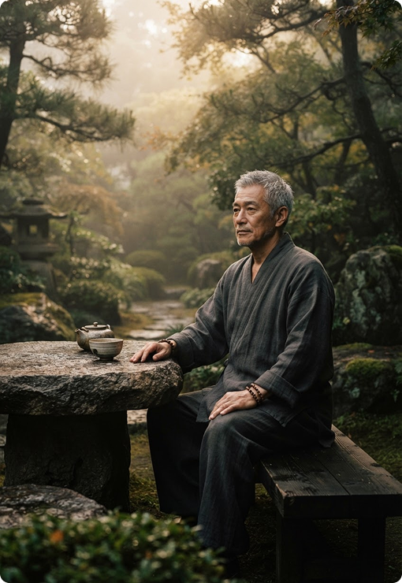

A visit with four guides
Meet the
Oracles.
Four voices. Your way of seeing.
Ancient wisdom, held in four distinct perspectives. Find the voice that meets your question.

Find the voice that meets your question
Find your Oracle
Every question has a different doorway.
Oracle 01
THE SEER
For the patterns beneath the question.
The Seer notices the possibilities beneath the question, helping you notice patterns, tensions and opportunities that may already be present.
“What am I not seeing clearly?”
“Is this helping become a future of my choosing?”
Oracle 02
THE MOONKEEPER
Listen to cycles and intuition.
The Moonkeeper helps you listen to the quieter signals beneath the surface — emotions, intuition, timing and change.
“What am I feeling beneath the surface?”
“What cycle am I moving through?”
Oracle 03
THE SAGE
Guide through change.
The Sage offers a slower perspective, helping you understand movement, change and the forces shaping a decision.
“What should I understand about this moment?”
“What is the nature of this
transition?”
Oracle 04
THE WEAVER
Interpret the patterns.
The Weaver looks for patterns across numbers, dates and cycles, offering a different lens through which to understand yourself.
“What patterns keep appearing in my life?”
“How does this period connect?”
Find a voice
Not sure who to ask?
Think of clarity as a conversation. What kind are you looking for?
The guides are here
Different voices. One intention.
Each Oracle offers a different language for reflection. You can return to the same question through different perspectives and discover something new each time.
Choose your guide and begin